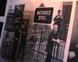
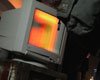
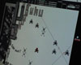

Hacktivism, tactical media
A presentation of NY cyber-art stage by Robert B. Lisek
17.03.2006 - 18:00-20:00 (Friday)
Galeria Entropia (ul. Rzeźnicza 4)
  
On 10.03.2006, Friday, at the opening of “States of Emergency Embassy” (an installation), we asked Robert B. Lisek about what his work is about and also the idea behind the “Fundamental Research Lab” - an international artist collective that Lisek takes part in. The presentation - “Hacktivism, tactical media” - is part of this ongoing exhibition.
The exhibition is open till 22.03.2006 (Wednesday)
SEE is a online and physical infrastructure which deals with spying on data and codes in the www space and which provides a frame for reflection about problems of domination and treatment in the complex urban environment. The embassy renders consular services and organizes courses of cryptography. The SEE project is based on the prototypical software and on the flexible database FLOAT, created by Robert B. Lisek in cooperation with Harvestworks Media Art Center and Lower Manhattan Cultural Council in New York.
“We treat our software as a weapon, as a conceptual vehicle to explore issues of domination and compulsion in the physical and digital space.” - Fundamental Research Lab
“What is fundamentally different about Float, as opposed to other systems, is that its document database is not a static entity, which sits there passively waiting for queries to set it into motion. Instead, it is constantly refining its structure.” - New York Times
This is the continuation of the cycle of actions realized in downtown Manhattan and Wall street, focused on the problems of cutting and controlling physical and digital space, barrage systems, firewalls and Wall street itself as a most powerful symbol of American economic dominance.
” hit them/me/you/us: this about fear, windows, codes and power, about false morality, about psyhosis, about stupidity and adaptation, about grotesque logic of violence.” - Robert B. Lisek
We show the digital data are not connected with specific form of manifestation, data can be filtered, structured, and transformed in many different way. We use for instant NY stock market data as a kind of blocks of which new intelligent personalities are build.
[[[[[[[[[[[ FUNDAMENTAL RESEARCH LAB ]]]]]]]]]]]
[[[[[ http://www.fundamentalresearch.org/ ]]]]]]
[[ 175 Stockholm St. # 303,Brooklyn, NY 11237 ]]
[[[[[[[[[[[[[ phone 646 519 0345 ]]]]]]]]]]]]]]]
iPod video file format:
lisek_see.mp4 (H.264 /AAC / 7.6MB / 2:09)
-> please use Quicktime for playback. You can download the free player for Mac or Windows
Alternative download link:
lisek_see.mov (Sorenson Video 3 / AAC / 8MB / 2:09)
-> you can watch this using Quicktime or VLC Media Player (free download)
 This work is licensed under a Creative Commons Attribution - NonCommercial - NoDerivs 2.5 License by Wrocław Weekly
This work is licensed under a Creative Commons Attribution - NonCommercial - NoDerivs 2.5 License by Wrocław Weekly


{kind=link}